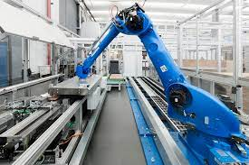
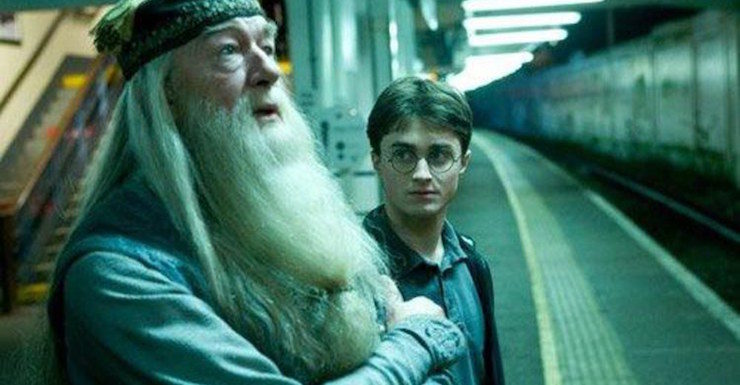

HOŞ GELDİNİZ
| 2000 Yılında İstanbul Küçükçekmece'de doğdum. Kaldığım ev Atatürk Havalimanı'na baktığı için dışarıyı izlemeye bayılırdım. Bir de ablam var. Onun dışında başka bir şey yoktu, zaten gerek de yok. Buradan ablama sevgiler <3 |

Atatürk Havalimanı |
| İlk okul, orta okulu evimin dibindeki Kaya Sebati Tuncay'da okudum. Daha sonra baktım olmuyor bari sıkıcı bir hayattan kopuş için keman çalayım dedim, 3 yıl boyunca sürecek ve sonunda kültür merkezinde tek başıma bir sonatı çalacak bir serüvenin başlangıcıydı. Daha sonraları o zaman TEOG olan sınava girdim ve %25'lik dilime girerek kendimle gurur duydum [yazar burada üzgün] |

|
| Daha sonra lise denilen yere geldim ve burada az buçuk bir şeyler öğrendim. Sağlık Meslek Lisesi'ydi. Hemşire Yardımcısı oldum. Burada da yaptık bir şeyler...Ha bir de keman çalmayı da bıraktım.Yani yaptığım şeyin iyi olacağını kim söyledi?? |

|
| Tabii o kadar sürede boş da durmadık. Lise'de booll booll haytalık yaptım demek isterdim ama yok ya bir şey yapmadım [üzgün surat]. Masa tenisine bu zamanlar başladım ama işin aslı çok da oynamıyordum. |

|
| Tabii o zaman çok da iyi değilmişim. Şimdi farkediyorum. Ne de olsa hayat geriye doğru bakılarak anlaşılır ama ileriye doğru yaşanır diye bir söz var. Her neyse az buçuk sınava çalıştım 5000. küsürlü bir şey oldum. Baktım sıralama iyi de olsa bu sıralamaya güzel bir şey gelmiyor. Eee bir de sanayi'de staj yaptım. Robotik Otomasyonunda. Baktım güzel yer değil. Onun motivasyonuyla bir kere daha çalışayım dedim. Zaten çok da bir seçeneğim yoktu. |

|
| Çalıştım. Hem de çok çalıştım ve sınavda 347. oldum. Evet bu sıralamaya bilgisayar mühendisliğinin durdurulamaz yükselişiyle beraber [ve benim de isteğimin bu bölüm yönünde olmasından dolayı] Sakarya Üniversitesi Bilgisayar Mühendisliği'ne yerleştim.Mutlu son[?] |

|